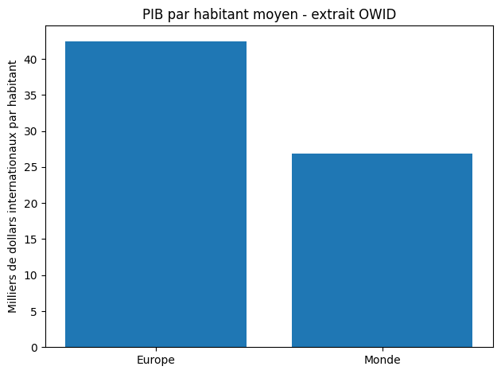
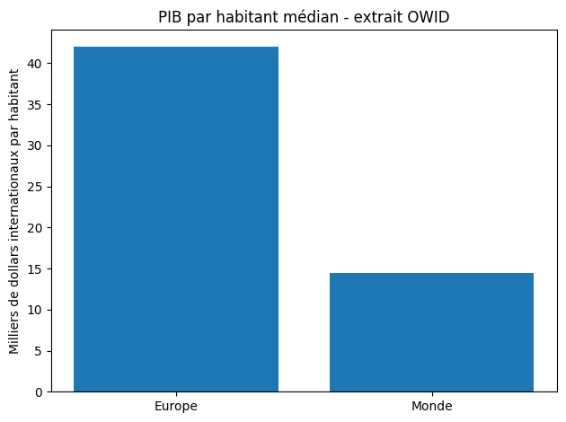

Corrigé TD3
Fonctions et comparaison de groupes
Les valeurs sont les extraits arrondis de l’énoncé, en milliers de dollars internationaux par habitant. Le groupe nommé Monde est une sélection de six pays, pas une moyenne mondiale. Les fonctions obligatoires supposent des listes non vides ; mediane_paire suppose une longueur paire.
Les exercices se suivent. Utiliser Tab puis Entrée ou Espace pour ouvrir une solution au clavier. Les zones de code peuvent défiler horizontalement.
Les sorties ci-dessous proviennent du code exécuté. Les simulations du TD4 peuvent changer à chaque exécution.
Démarche en pseudo-code 1 — Automatiser une statistique
# Objectif : comparer deux listes de valeurs
# Entrees : liste_groupe_a, liste_groupe_b
# Definir une fonction moyenne(liste)
# Definir une fonction mediane(liste)
# Appliquer les fonctions aux deux groupes
# Comparer les resultats
# Sortie : tableau + phrase d'interpretationLes exercices ci-dessous mettent en œuvre ce plan.
Démarche en pseudo-code 2 — Comparer deux groupes par un graphique
# Objectif : comparer visuellement deux resultats
# Entree : deux listes de valeurs et une fonction moyenne
# 1. Calculer la moyenne du groupe Europe
# 2. Calculer la moyenne du groupe Monde
# 3. Placer les deux resultats dans une liste
# 4. Tracer une barre par groupe
# 5. Sauvegarder la figure
# Sortie : comparaison lisibleLes exercices ci-dessous mettent en œuvre ce plan.
Exercice 1 — Créer deux groupes de pays
Objectif. Créer et documenter les deux groupes.
Afficher la solution : exercice 1
Démarche de résolution
Conserver l’ordre des pays et des valeurs pour savoir à quel pays correspond chaque montant.
Code Python commenté
groupe_europe = [46.0, 54.0, 34.0, 38.0, 22.0, 61.0]
groupe_monde = [46.0, 76.0, 19.0, 10.0, 7.0, 3.0]
pays_europe = ["France", "Germany", "Spain", "Italy", "Poland", "Sweden"]
pays_monde = ["France", "United States", "China", "Brazil", "India", "Ethiopia"]
print(pays_europe, groupe_europe)
print(pays_monde, groupe_monde)
Résultat et interprétation
Deux groupes de six pays, avec France présente dans les deux. Les observations des groupes ne sont donc pas toutes distinctes.
Sortie de l’exécution de référence :
['France', 'Germany', 'Spain', 'Italy', 'Poland', 'Sweden'] [46.0, 54.0, 34.0, 38.0, 22.0, 61.0]
['France', 'United States', 'China', 'Brazil', 'India', 'Ethiopia'] [46.0, 76.0, 19.0, 10.0, 7.0, 3.0]
Exercice 2 — Prédire quelques opérations sur les listes
Objectif. Prédire les opérations avant de créer des fonctions.
Afficher la solution : exercice 2
Démarche de résolution
Vérifier d’abord les données sur des opérations connues : longueur, somme, tri et comparaison.
Code Python commenté
print(len(groupe_europe))
print(sum(groupe_monde))
print(sorted(groupe_monde))
print(groupe_europe[0] > groupe_monde[0])
# Ces contrôles permettent de séparer une erreur de données d'une erreur
# dans la fonction que l'on écrira ensuite.
Résultat et interprétation
6 ; 161.0 ; [3.0, 7.0, 10.0, 19.0, 46.0, 76.0] ; False, car 46.0 égale 46.0.
Sortie de l’exécution de référence :
6
161.0
[3.0, 7.0, 10.0, 19.0, 46.0, 76.0]
False
Exercice 3 — Rappel intuitif
Objectif. Rappeler le sens des statistiques.
Afficher la solution : exercice 3
Démarche de résolution
Décrire ce que chaque mesure résume avant d’écrire son calcul.
Code Python commenté
# La moyenne additionne les valeurs et divise par leur nombre : niveau moyen.
# La médiane partage la liste triée en deux moitiés ; si la longueur est
# paire, on prend ici la moyenne des deux valeurs centrales.
# Le minimum et le maximum donnent les bornes des valeurs observées ;
# leur différence est l'étendue.
Résultat et interprétation
La moyenne est sensible aux grandes valeurs ; la médiane renseigne sur le centre de la liste triée.
Exercice 4 — Lire une fonction avant d'en écrire une
Objectif. Lire une définition et un appel de fonction.
Afficher la solution : exercice 4
Démarche de résolution
Une fonction est définie avant son appel. Elle calcule une valeur et return la rend disponible pour la suite.
Code Python commenté
def ajouter_trois(x):
resultat = x + 3
return resultat
print(ajouter_trois(10))
# Paramètre : x ; argument de cet appel : 10.
# return resultat renvoie 13 ; print(...) affiche 13.
Résultat et interprétation
13.
Sortie de l’exécution de référence :
13
Exercice 5 — Modifier une fonction courte
Objectif. Convertir des milliers de dollars en dollars.
Afficher la solution : exercice 5
Démarche de résolution
Un millier vaut 1000 unités. Après changement du nom ou du paramètre, modifier aussi les endroits qui l’utilisent.
Code Python commenté
def convertir_en_dollars(valeur_milliers):
return valeur_milliers * 1000
print(convertir_en_dollars(46.0))
# Variante demandée : nouveau nom et nouveau paramètre cohérents.
def milliers_vers_dollars(montant):
return montant * 1000
print(milliers_vers_dollars(46.0))
Résultat et interprétation
46000.0 dans les deux cas ; changer seulement l’appel provoquerait NameError.
Sortie de l’exécution de référence :
46000.0
46000.0
Exercice 6 — Fonction moyenne
Objectif. Écrire et tester la fonction moyenne.
Afficher la solution : exercice 6
Démarche de résolution
La liste donnée en argument devient valeurs pendant l’appel. Vérifier un résultat facile avant les groupes du TD.
Code Python commenté
def moyenne(valeurs):
return sum(valeurs) / len(valeurs)
print("Test attendu 12.0 :", moyenne([10, 12, 14]))
moyenne_europe = moyenne(groupe_europe)
moyenne_monde = moyenne(groupe_monde)
print(f"Europe : {moyenne_europe:.2f} milliers de dollars par habitant")
print(f"Monde : {moyenne_monde:.2f} milliers de dollars par habitant")
Résultat et interprétation
Test : 12.0 ; Europe : 42.50 ; Monde : 26.83.
Sortie de l’exécution de référence :
Test attendu 12.0 : 12.0
Europe : 42.50 milliers de dollars par habitant
Monde : 26.83 milliers de dollars par habitant
Exercice 7 — Fonction médiane guidée
Objectif. Calculer une médiane sur une liste de longueur paire.
Afficher la solution : exercice 7
Démarche de résolution
Trier sans modifier la liste originale. Pour six valeurs, les indices centraux sont 2 et 3, car les indices commencent à 0. // est la division entière.
Code Python commenté
def mediane_paire(valeurs):
valeurs_triees = sorted(valeurs)
n = len(valeurs_triees)
milieu_droit = n // 2
milieu_gauche = milieu_droit - 1
return (valeurs_triees[milieu_gauche] + valeurs_triees[milieu_droit]) / 2
print("Test attendu 11.0 :", mediane_paire([8, 10, 12, 14]))
mediane_europe = mediane_paire(groupe_europe)
mediane_monde = mediane_paire(groupe_monde)
print("Médianes Europe et Monde :", mediane_europe, mediane_monde)
Résultat et interprétation
11.0 ; Europe : 42.0 ; Monde : 14.5.
Sortie de l’exécution de référence :
Test attendu 11.0 : 11.0
Médianes Europe et Monde : 42.0 14.5
Exercice 8 — Débogage de fonction
Objectif. Corriger un nom et un retour manquant.
Afficher la solution : exercice 8
Démarche de résolution
valeur et valeurs sont deux noms distincts. Une fonction sans return renvoie None même si elle affiche un nombre.
Code Python commenté
# Premier bug : sum(valeur) utiliserait un nom non défini (NameError).
def moyenne_corrigee(valeurs):
resultat = sum(valeurs) / len(valeurs)
return resultat
# Deuxième bug : print seul ne renvoie pas le résultat à l'appelant.
def moyenne_avec_return(valeurs):
return sum(valeurs) / len(valeurs)
m = moyenne_avec_return([10, 12, 14])
print(m + 1)
Résultat et interprétation
13.0. Dans le fragment initial, None + 1 provoquerait TypeError après l’affichage de 12.0.
Sortie de l’exécution de référence :
13.0
Exercice 9 — Min, max et proportion
Objectif. Calculer min, max et proportion au-dessus de 30.
Afficher la solution : exercice 9
Démarche de résolution
Écrire un compteur pour chaque groupe ; le seuil est strict. Les deux divisions ont pour dénominateur six.
Code Python commenté
compteur_europe = 0
for valeur in groupe_europe:
if valeur > 30:
compteur_europe = compteur_europe + 1
part_europe = compteur_europe / len(groupe_europe) * 100
compteur_monde = 0
for valeur in groupe_monde:
if valeur > 30:
compteur_monde = compteur_monde + 1
part_monde = compteur_monde / len(groupe_monde) * 100
print("Europe min, max :", min(groupe_europe), max(groupe_europe))
print("Monde min, max :", min(groupe_monde), max(groupe_monde))
print(f"Parts au-dessus de 30 : Europe {part_europe:.2f} %, Monde {part_monde:.2f} %")
Résultat et interprétation
Europe : min 22, max 61, 5/6 = 83.33 % ; Monde : min 3, max 76, 2/6 = 33.33 %.
Sortie de l’exécution de référence :
Europe min, max : 22.0 61.0
Monde min, max : 3.0 76.0
Parts au-dessus de 30 : Europe 83.33 %, Monde 33.33 %
Exercice 10 — Graphique de comparaison
Objectif. Tracer les moyennes puis les médianes.
Afficher la solution : exercice 10
Démarche de résolution
Appeler les fonctions déjà testées et placer deux résultats face aux deux noms de groupes. Utiliser des fichiers différents pour comparer les deux versions.
Code Python commenté
import matplotlib.pyplot as plt
groupes = ["Europe", "Monde"]
moyennes = [moyenne(groupe_europe), moyenne(groupe_monde)]
plt.figure()
plt.bar(groupes, moyennes)
plt.ylabel("Milliers de dollars internationaux par habitant")
plt.title("PIB par habitant moyen - extrait OWID")
plt.tight_layout()
plt.savefig("comparaison_pib_td3.png", dpi=300)
plt.show()
plt.close()
medianes = [mediane_paire(groupe_europe), mediane_paire(groupe_monde)]
plt.figure()
plt.bar(groupes, medianes)
plt.ylabel("Milliers de dollars internationaux par habitant")
plt.title("PIB par habitant médian - extrait OWID")
plt.tight_layout()
plt.savefig("comparaison_medianes_td3.png", dpi=300)
plt.show()
plt.close()
Résultat et interprétation
Le groupe Europe dépasse le groupe Monde dans les deux figures. L’écart des médianes est plus grand que celui des moyennes.
Sortie de l’exécution de référence :


Exercice 11 — Déboguer un graphique
Objectif. Diagnostiquer deux graphiques trompeurs ou incomplets.
Afficher la solution : exercice 11
Démarche de résolution
Il faut une valeur calculée pour chacun des deux groupes et créer medianes avant son emploi. Attention : matplotlib peut répéter une valeur unique pour deux étiquettes sans signaler d’erreur.
Code Python commenté
# A : fournir une seule moyenne risque de la répéter sur les deux barres.
moyennes = [moyenne(groupe_europe), moyenne(groupe_monde)]
print("Longueurs pour A :", len(groupes), len(moyennes))
# B : sans définition préalable, medianes provoquerait NameError.
# Ici elle existe déjà après l'exercice 10, mais il faut vérifier sa création.
medianes = [mediane_paire(groupe_europe), mediane_paire(groupe_monde)]
print("Données corrigées A et B :", moyennes, medianes)
# Les appels plt.bar(groupes, moyennes) et plt.bar(groupes, medianes)
# sont ceux des deux graphiques corrigés à l'exercice 10.
Résultat et interprétation
Longueurs 2 et 2 ; moyennes [42.5, 26.833…] ; médianes [42.0, 14.5]. Le fragment A est une erreur de données, même s’il ne déclenche pas d’exception.
Sortie de l’exécution de référence :
Longueurs pour A : 2 2
Données corrigées A et B : [42.5, 26.833333333333332] [42.0, 14.5]
Exercice 12 — Tableau texte
Objectif. Afficher un tableau avec les six colonnes demandées.
Afficher la solution : exercice 12
Démarche de résolution
Une ligne par groupe, mêmes unités et mêmes arrondis. Aucun tableau pandas n’est nécessaire.
Code Python commenté
print("groupe | moyenne | mediane | min | max | part_au_dessus_30")
print(f"Europe | {moyenne_europe:.2f} | {mediane_europe:.2f} | "
f"{min(groupe_europe):.1f} | {max(groupe_europe):.1f} | {part_europe:.2f} %")
print(f"Monde | {moyenne_monde:.2f} | {mediane_monde:.2f} | "
f"{min(groupe_monde):.1f} | {max(groupe_monde):.1f} | {part_monde:.2f} %")
# Les niveaux sont en milliers de dollars internationaux par habitant.
Résultat et interprétation
Europe : 42.50 | 42.00 | 22.0 | 61.0 | 83.33 % ; Monde : 26.83 | 14.50 | 3.0 | 76.0 | 33.33 %. Le tableau affiché peut être copié dans le rendu.
Sortie de l’exécution de référence :
groupe | moyenne | mediane | min | max | part_au_dessus_30
Europe | 42.50 | 42.00 | 22.0 | 61.0 | 83.33 %
Monde | 26.83 | 14.50 | 3.0 | 76.0 | 33.33 %
Exercice 13 — Question économique
Objectif. Formuler cinq observations prudentes.
Afficher la solution : exercice 13
Démarche de résolution
Comparer les statistiques des deux sélections, sans transformer leur différence en résultat sur tous les pays.
Code Python commenté
# Le groupe Europe a la moyenne la plus élevée : 42,50 contre 26,83.
# Il a aussi la médiane la plus élevée : 42,0 contre 14,5.
# Les grandes valeurs du groupe Monde tirent davantage sa moyenne vers le haut.
# Ajouter ou retirer un pays change ces résumés ; France est dans les deux groupes.
# Six pays par groupe ne forment pas un échantillon représentatif des continents
# ou du monde : la comparaison est descriptive et dépend du choix des pays.
Résultat et interprétation
Les deux indicateurs classent ces groupes dans le même ordre, mais décrivent différemment leur répartition.
Entraînement facultatif
Ces dix questions sont également corrigées. Elles se lisent après le parcours obligatoire, dans l’ordre.
Question facultative 1 — Adapter les fonctions après ajout d’un septième pays.
Objectif. Adapter les fonctions après ajout d’un septième pays.
Afficher la solution : question facultative 1
Démarche de résolution
Utiliser des valeurs déjà données : ajouter United States au premier groupe et Italy au second. Le premier devient explicitement Europe + États-Unis. Une longueur impaire impose une nouvelle médiane qui prend la seule valeur centrale.
Code Python commenté
groupe_europe_et_usa = groupe_europe + [76.0]
groupe_monde_et_italie = groupe_monde + [38.0]
# Les noms élargis évitent de présenter les États-Unis comme un pays européen.
pays_europe_et_usa = pays_europe + ["United States"]
pays_monde_et_italie = pays_monde + ["Italy"]
def mediane(valeurs):
valeurs_triees = sorted(valeurs)
n = len(valeurs_triees)
milieu = n // 2
if n % 2 == 0: # Reste de la division par 2 : zéro signifie pair.
return (valeurs_triees[milieu - 1] + valeurs_triees[milieu]) / 2
return valeurs_triees[milieu]
print(moyenne(groupe_europe_et_usa), mediane(groupe_europe_et_usa))
print(moyenne(groupe_monde_et_italie), mediane(groupe_monde_et_italie))
Résultat et interprétation
Médianes 46.0 et 19.0. moyenne reste correcte ; mediane_paire aurait renvoyé des résultats faux (42.0 et 14.5). Les groupes originaux sont conservés.
Sortie de l’exécution de référence :
47.285714285714285 46.0
28.428571428571427 19.0
Question facultative 2 — Calculer l’étendue des deux groupes.
Objectif. Calculer l’étendue des deux groupes.
Afficher la solution : question facultative 2
Démarche de résolution
Soustraire la plus petite valeur à la plus grande.
Code Python commenté
print("Étendue Europe :", max(groupe_europe) - min(groupe_europe))
print("Étendue Monde :", max(groupe_monde) - min(groupe_monde))
Résultat et interprétation
39.0 et 73.0 milliers de dollars internationaux par habitant.
Sortie de l’exécution de référence :
Étendue Europe : 39.0
Étendue Monde : 73.0
Question facultative 3 — Créer une fonction de proportion.
Objectif. Créer une fonction de proportion.
Afficher la solution : question facultative 3
Démarche de résolution
Compter les valeurs qui vérifient la condition puis renvoyer un pourcentage.
Code Python commenté
def proportion_au_dessus(valeurs, seuil):
compteur = 0
for valeur in valeurs:
if valeur > seuil:
compteur = compteur + 1
return compteur / len(valeurs) * 100
print(proportion_au_dessus(groupe_europe, 30))
print(proportion_au_dessus(groupe_monde, 30))
Résultat et interprétation
83.33… % et 33.33… %. La fonction suppose une liste non vide.
Sortie de l’exécution de référence :
83.33333333333334
33.33333333333333
Question facultative 4 — Tester un seuil de 50.
Objectif. Tester un seuil de 50.
Afficher la solution : question facultative 4
Démarche de résolution
Changer seulement l’argument seuil.
Code Python commenté
print(f"Europe > 50 : {proportion_au_dessus(groupe_europe, 50):.2f} %")
print(f"Monde > 50 : {proportion_au_dessus(groupe_monde, 50):.2f} %")
Résultat et interprétation
Europe : 2/6 = 33.33 % ; Monde : 1/6 = 16.67 %.
Sortie de l’exécution de référence :
Europe > 50 : 33.33 %
Monde > 50 : 16.67 %
Question facultative 5 — Afficher un résumé avec une fonction.
Objectif. Afficher un résumé avec une fonction.
Afficher la solution : question facultative 5
Démarche de résolution
La fonction resume sert ici à afficher ; elle n’a pas de valeur numérique de retour à réutiliser.
Code Python commenté
def resume(valeurs):
print("Moyenne :", moyenne(valeurs))
print("Médiane :", mediane(valeurs))
print("Minimum :", min(valeurs))
print("Maximum :", max(valeurs))
resume(groupe_europe)
resume(groupe_monde)
Résultat et interprétation
On retrouve les statistiques du tableau. mediane est la fonction générale de l’extension 1.
Sortie de l’exécution de référence :
Moyenne : 42.5
Médiane : 42.0
Minimum : 22.0
Maximum : 61.0
Moyenne : 26.833333333333332
Médiane : 14.5
Minimum : 3.0
Maximum : 76.0
Question facultative 6 — Observer l’influence d’une valeur très élevée.
Objectif. Observer l’influence d’une valeur très élevée.
Afficher la solution : question facultative 6
Démarche de résolution
L’énoncé demande une expérience : utiliser une valeur test égale à dix fois le maximum, sans l’attribuer à un pays ni la présenter comme une donnée OWID.
Code Python commenté
valeur_test = max(groupe_monde) * 10 # Test fictif : aucun pays associé.
groupe_test = groupe_monde + [valeur_test]
print("Avant :", moyenne(groupe_monde))
print("Après ajout du test :", moyenne(groupe_test))
Résultat et interprétation
La moyenne passe de 26.83 à 131.57. L’expérience illustre sa sensibilité à une valeur extrême ; le groupe original reste intact.
Sortie de l’exécution de référence :
Avant : 26.833333333333332
Après ajout du test : 131.57142857142858
Question facultative 7 — Calculer un premier quartile avec une convention annoncée.
Objectif. Calculer un premier quartile avec une convention annoncée.
Afficher la solution : question facultative 7
Démarche de résolution
On choisit la méthode du rang plafond(n/4) : le premier quartile est la plus petite valeur atteignant au moins 25 % des observations triées. D’autres conventions interpolent et donnent des résultats différents.
Code Python commenté
def premier_quartile(valeurs):
valeurs_triees = sorted(valeurs)
n = len(valeurs_triees)
rang = (n + 3) // 4 # Plafond de n/4 pour un entier positif.
return valeurs_triees[rang - 1]
print(premier_quartile(groupe_europe))
print(premier_quartile(groupe_monde))
Résultat et interprétation
34.0 et 7.0 : rang 2 dans chaque liste de six valeurs. Toujours préciser la méthode de quartile.
Sortie de l’exécution de référence :
34.0
7.0
Question facultative 8 — Calculer un écart-type avec une formule explicite.
Objectif. Calculer un écart-type avec une formule explicite.
Afficher la solution : question facultative 8
Démarche de résolution
La formule annoncée comme fournie par l’enseignant n’est pas jointe. À titre de convention descriptive, on choisit la racine de la moyenne des carrés des écarts à la moyenne, avec division par n. Ce n’est pas l’écart-type corrigé avec n−1.
Code Python commenté
def ecart_type_descriptif(valeurs):
centre = moyenne(valeurs)
somme_carres = 0
for valeur in valeurs:
somme_carres = somme_carres + (valeur - centre) ** 2
return (somme_carres / len(valeurs)) ** 0.5
print(f"Écart-type Europe : {ecart_type_descriptif(groupe_europe):.2f}")
print(f"Écart-type Monde : {ecart_type_descriptif(groupe_monde):.2f}")
Résultat et interprétation
Résultats en milliers de dollars internationaux par habitant. Confirmer la convention avec l’enseignant si sa formule est distribuée séparément.
Sortie de l’exécution de référence :
Écart-type Europe : 12.91
Écart-type Monde : 26.11
Question facultative 9 — Interpréter la dispersion.
Objectif. Interpréter la dispersion.
Afficher la solution : question facultative 9
Démarche de résolution
Les carrés des distances à la moyenne augmentent quand les observations sont éloignées du centre.
Code Python commenté
# Un écart-type plus grand indique des valeurs plus dispersées autour
# de leur moyenne ; il est exprimé dans la même unité que les valeurs.
Résultat et interprétation
L’écart-type ne mesure pas le niveau moyen ; deux groupes peuvent avoir la même moyenne et des dispersions différentes.
Question facultative 10 — Convertir les deux listes en dollars.
Objectif. Convertir les deux listes en dollars.
Afficher la solution : question facultative 10
Démarche de résolution
Réutiliser la fonction de conversion dans des boucles simples.
Code Python commenté
europe_dollars = []
for valeur in groupe_europe:
europe_dollars.append(convertir_en_dollars(valeur))
monde_dollars = []
for valeur in groupe_monde:
monde_dollars.append(convertir_en_dollars(valeur))
print(europe_dollars)
print(monde_dollars)
Résultat et interprétation
Les niveaux sont multipliés par 1000 ; les proportions et le classement des pays restent identiques.
Sortie de l’exécution de référence :
[46000.0, 54000.0, 34000.0, 38000.0, 22000.0, 61000.0]
[46000.0, 76000.0, 19000.0, 10000.0, 7000.0, 3000.0]
Sources et fichiers de référence
Les extraits des TD1 à TD4 sont ceux des énoncés. Les CSV complémentaires sont des copies des fichiers du dépôt, dont la date de téléchargement initial n’est pas documentée. Consulter les sources et empreintes SHA-256 des CSV.